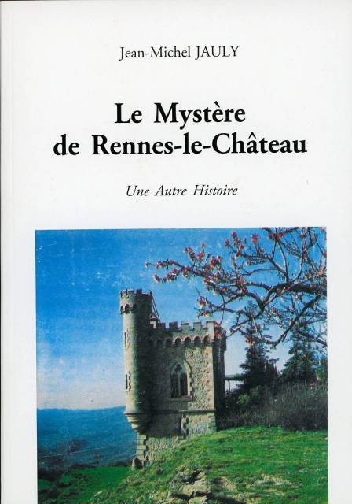
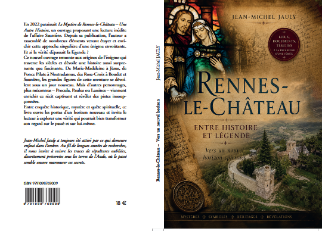

Un personnage réel
Bérenger Saunière est arrivé à Rennes-le-Château en 1885 et y a exercé jusqu’à sa mort en 1917.
Le mystère d’un petit village de l’Aude, d’un curé énigmatique et d’une fortune dont l’origine nourrit encore les hypothèses.
Commencer l’enquête ↓À la fin du XIXe siècle, Bérenger Saunière transforme profondément son environnement à Rennes-le-Château : restauration de l’église, construction d’un domaine et d’une tour, dépenses qui paraissent disproportionnées pour un curé de village. La commune elle-même présente l’origine de ses ressources comme inconnue et explique que cette situation a nourri la légende d’un trésor.
Bérenger Saunière est arrivé à Rennes-le-Château en 1885 et y a exercé jusqu’à sa mort en 1917.
L’église Sainte-Marie-Madeleine a été restaurée et richement décorée. Le domaine de l’abbé Saunière fait aujourd’hui partie du patrimoine visité sur place.
Trésor royal, trésor religieux, documents secrets ou héritage extraordinaire : plusieurs scénarios ont été proposés, sans preuve décisive permettant d’en établir un comme vérité.
Le mystère repose d’abord sur une biographie bien documentée, à laquelle se sont ajoutées des interprétations au fil du temps.
Bérenger Saunière arrive à Rennes-le-Château et prend en charge la paroisse.
L’église est restaurée et son environnement est progressivement aménagé. Le projet prend une ampleur considérable.
Des travaux importants sont engagés, avec du mobilier et des éléments décoratifs commandés notamment à la maison Giscard de Toulouse.
La gestion financière de Saunière et ses pratiques liées aux messes font l’objet de contestations et d’un contentieux ecclésiastique.
Sa mort contribue à renforcer le récit d’un secret jamais entièrement révélé.
Livres, enquêtes, hypothèses ésotériques et œuvres de fiction popularisent l’affaire bien au-delà du village.
Le dossier mélange des éléments matériels, des documents rapportés par des auteurs et des interprétations. C’est précisément cette superposition qui rend l’enquête passionnante — et difficile.
Des récits associent Saunière à la découverte de documents cachés. Leur rôle exact et l’interprétation de leurs textes font partie des sujets les plus débattus.
Les travaux de l’église sont souvent présentés comme le point de départ d’une découverte souterraine. Il faut distinguer les éléments archéologiques établis des reconstructions ultérieures.
La statue du démon portant le bénitier est devenue l’un des symboles de l’affaire. Sa présence est réelle ; l’idée qu’elle cacherait un message secret relève de l’interprétation.
L’église est dédiée à Marie-Madeleine. Des théories modernes ont relié Rennes-le-Château à une prétendue descendance de Jésus, mais cela ne constitue pas un fait historique établi.
Le relief, les points de vue et les monuments voisins ont donné naissance à des lectures géométriques ou symboliques. Elles doivent être présentées comme des hypothèses.
Certains auteurs cherchent des codes dans les inscriptions, les positions de statues, les peintures ou l’architecture. Une interprétation n’est pas une preuve en soi.
L’enquête présentée sur ce site se prolonge dans deux ouvrages de Jean-Michel Jauly. Le premier ouvre une autre lecture de l’affaire Saunière ; le second élargit la réflexion et propose un nouvel horizon, à la croisée de l’histoire, de la légende et de la spiritualité.

Le premier ouvrage de Jean-Michel Jauly.
Ce livre constitue le point de départ de la démarche de l’auteur et propose une première lecture de l’affaire de Rennes-le-Château à travers les recherches, les documents et les pistes qui ont nourri cette enquête.
Il ouvre le chemin vers le second ouvrage, Rennes-le-Château — Entre histoire et légende : Vers un nouvel horizon spirituel, qui approfondit et élargit la recherche.

Vers un nouvel horizon spirituel
Jean-Michel Jauly
Ce nouvel ouvrage constitue le cœur de cette nouvelle étape de l’enquête. Il invite à dépasser la seule recherche d’un trésor pour explorer les liens possibles entre histoire, légende, symboles, personnages et spiritualité.
À travers notamment Marie-Madeleine, Jésus, Ponce Pilate, Nostradamus, les Rose-Croix, Boudet et Saunière, mais aussi Procula, Paulus et Lessines, l’auteur propose de nouvelles pistes et ouvre une réflexion vers un nouvel horizon spirituel.
En savoir plus ↓Le premier ouvrage. Publié en 2022, ce livre propose une lecture personnelle et inédite du mystère de Rennes-le-Château et constitue le point de départ de la démarche de l’auteur.
Il invite le lecteur à reprendre les éléments de l’affaire, à regarder autrement les personnages et les indices, et à s’interroger sur ce qui se cache derrière les récits traditionnels.
Découvrir le livreLe nouvel ouvrage. Cette nouvelle étape de la recherche remonte aux origines de l’énigme et élargit considérablement le champ de l’enquête.
De Marie-Madeleine à Jésus, de Ponce Pilate à Nostradamus, des Rose-Croix à Boudet et Saunière, mais aussi à travers des personnages moins connus comme Procula, Paulus ou Lessines, le livre propose de nouvelles pistes et une réflexion qui dépasse la seule recherche d’un trésor.
Entre enquête historique, mystère et quête spirituelle, il ouvre une perspective nouvelle : et si la vérité recherchée à Rennes-le-Château ne se réduisait pas à un secret matériel ?
Découvrir le nouvel horizonLe nouvel ouvrage est référencé par la librairie La Rose Rouge, qui annonce sa parution officielle au 31 juillet 2026 et indique un prix de 18 € + frais de port. Le premier ouvrage y est également référencé en édition 2022.
Voir la page du nouvel ouvrage
Cette page peut être remplacée par un lien direct vers ta page de commande, ton site personnel, ou un formulaire de contact.
La version la plus populaire imagine un trésor ancien ou religieux. Elle explique bien la puissance narrative de l’affaire, mais aucune découverte spectaculaire n’a été établie comme preuve définitive.
Selon certains scénarios, Saunière aurait trouvé des documents susceptibles de changer notre compréhension d’une famille, d’une institution ou d’un épisode historique. Là encore, les récits divergent fortement.
Des auteurs ont associé Rennes-le-Château à une tradition selon laquelle Marie-Madeleine serait venue en Gaule, voire à des théories sur une descendance de Jésus. Ces récits appartiennent à l’histoire des traditions et des spéculations, pas à un consensus historique.
Une partie de l’enquête se concentre sur les revenus de Saunière, les dons, les messes et ses pratiques pastorales. Cette piste est moins spectaculaire, mais elle est essentielle pour comprendre l’affaire sans commencer par l’hypothèse du trésor.
La décoration contient de nombreux éléments intrigants. Il reste toutefois nécessaire de séparer ce qui est objectivement visible de ce qui est interprété après coup comme un système codé.
Qui affirme le fait ? Un document d’archive, un témoin, un chercheur, un romancier ou une vidéo ?
Comparer plusieurs sources indépendantes et privilégier les archives, inventaires, travaux historiques et sites institutionnels.
Fait = documenté. Hypothèse = plausible mais discutée. Légende = récit transmis sans preuve suffisante.
Quelle phrase est la plus rigoureuse ?
Pour une enquête sérieuse, commencez par les sources locales et patrimoniales, puis confrontez-les aux ouvrages et recherches consacrés à l’affaire.
Ce site pédagogique distingue volontairement faits, hypothèses et légendes. Il ne prétend pas résoudre le mystère.